1. Introduction
My name is Teoman Bayindir and this is my thesis work for Yrgo’s game programmer course. This work was done midst the development of the game Hexmachia and this thesis work will describe how to create an equipment system in the vein of Armored Core VI: Fires of Rubicon in Unreal Engine 5. AC6’s equipment system lets the player customize parts of their mech. This leads to players feeling a sense of ownership of their character, expressing the way they want to tackle the game's various challenges, and getting a sense of satisfaction upon beating said challenges with their own brain child. When one faces failure, it encourages having to take a step back and analyze, then strategize about what equipment could be of more use. This is why I deem this system worthy of replicating.
Hexmachia’s combat is (as previously mentioned) inspired by Armored Core VI: Fires of Rubicon’s combat systems, but shifts its focus entirely on 1v1 multiplayer combat as two witches partake in a rite where only one may survive.
2. Goal
My thesis question is: “How do you create an equipment system in Unreal Engine 5 in the vein of Armored Core VI: Fires of Rubicon”. What my work boils down to is how we can go about using UE5’s tool set to design a system that captures the essence of AC6’s equipment system, rather than mimicking it exactly, as AC6’s system is quite expansive and had a lot of content packed into it. Are there systems that can be abstracted (as in can certain parts of the system be scoped down, but still have similar strengths to the original)? Also, how will the system need to change to reflect the needs for this particular game? Additionally, how will developing this as part of a team change how it's developed?
Hexmachia is heavily inspired by Armored Core VI in most aspects of its design, but there will be key differences from the original, as the game tries to find its own identity.
3. Areas of Research
How would we store static data?
In order to create equippable spells for this game, an approach that would make it so other team members could easily create spells on their own would be required, as is good practice when working with other developers.
Blueprint Function Library
A Blueprint Function Library most common use case is to create functions accessible on a global scope, helping you avoid placing the same nodes over and over again. Although a BPFL can not contain any variables accessible on a global scope, its functions can instead output variables hard coded into its functions.
Pros:
- Easy to reach via blueprint.
Cons:
- Very unintuitive to use for non programmers that are part of the team.
- Finicky to change, as it's layered under a lot of Unreal’s UI.
- Blueprint function libraries have no inheritance, which demands a lot of hard coding when implementing them and more gruntwork when creating new stored spell information.
Data Assets
You can imagine Data Assets as an ordinary UE object with exposed variables: you define what set of variables types the object will contain (in a Primary Data Asset), then are able to create assets where you set the values of said variables. Primary Data Assets can also inherit from other PDAs. If you are familiar with Unity engine’s Scriptable Objects,
Pros:
- Can inherit. Cuts down on gruntwork.
- Is an asset. Easy for everyone if they just want to change a number of a spell, or create an entirely new one.
Cons:
- Requires a reference, which makes it more difficult to access than a BPFL. Although the fact that it is a reference lets you easily switch out one Data Asset for another (easy for others to do), it is an imitation that is necessary in order to make the system more dynamic.
A common theme when researching things for UE5 will be that their documentation does not help you very much. In this case most information is easiest to find through Youtube tutorials and user made forums.
How would we store player inputted data at runtime?
UE5’s primary way of saving data is through the blueprint class Save Game Object. The Save Game Object is like most other objects, the key difference being that it is saved in memory, and therefore it can store its data between levels and between sessions of playing the game.
How is game UI created in UE5 and what is best practice?
Widgets
UI is an integral part of the system we intend to recreate. As it is the main way the player interacts with it, we need to delve into what common practices are in UE5. UE5’s widgets is a tool that lets you design a User Interface, by placing individual pieces of UI called “Widgets” in a hierarchy, where they can be parented and childed to one another. There are 40+ widgets to choose from and in order to understand what each individual widget does there are a good amount of tutorials online that explain best practice.
What most tutorials showcase is that most UI elements consist of many widgets combined to fulfill one specific use case, a button that has a label on it, it uses the Button widget (which allows it to be clickable) and the Text widget (which displays text).
Some common shortcomings many sources warn you about is that changes to a custom widgets structure can be troublesome as a significant amount of widgets can only have one child. This will be showcased later as it was something that came up quite often. Additionally another pain point of widgets is that when one widget is nested in another user made widget, it can then only be changed in that user-made widgets blueprint. Variables of nested widgets are completely inaccessible, unless exposed via visual scripting, but this has to be done to every user-made widget, which wastes a lot of time, but unfortunately this is a vital part of how UE5’s widgets work. Although this is not a flaw that warrants looking into alternatives as UE5 does not have any other ways of creating UI.
Widget Components
Widget Components are an experimental feature in UE5. They are objects one can latch onto a widget, not as a child, but as extension of the widget’s functionality. Unfortunately there is no easy way to do this via blueprinting and the time it would take to create this via a C++ solution would not be in the scope of this project nor save the amount of time it would take to implement.
AngelScript
Originally this thesis had less of a focus on equipment and was supposed to be much more focused on how AngelScript could be used to develop a lot of the systems that would be used for the game. A chunk of research done for this project was looking into AS. But for reasons that will be explained in the process part of this breakdown, AngelScript and its accompanying thesis question, ended up being scrapped.
Replaying Armored Core VI: Fires of Rubicon
AC6’s main way of making the equipment system engaging is through every piece of equipment having a wide variety of different strengths and drawbacks. Weapons that are hard hitting will have to sacrifice an attribute like weight and or rate of fire. Even equipment, like what kinds of leds you use, matter as ones providing better defence may come at the cost of slower move speed. Keeping in mind that everything must come at a cost is important when making adjustments to this system.
4. The Process
AngelScript Troubles
AngelScript wound up being ditched as it came with a whole slew of technical problems. AngelScript required that you build a custom version of Unreal built from source, this led to the engine size being around 330 gbs of storage on every team member’s computer. This was not indicated in research, as AngelScripts documentation is not very extensive and other sources about the extension being quite sparse. The realisation was also delayed (this was discovered a week and a half into the project) as compiling the engine came with many unexpected errors, as compiling tools were missing and or out of date. There was an option to create a build of the engine that could be sent to each team member that would be small enough in size, but as a team we did not wanna risk running into more building errors than we already had.
Creation Data Assets For Spells
The first thing to implement were the Data Assets for spells, as to not bottleneck other team members that depend on these.
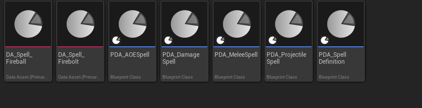
This first iteration of the DAs were easy for the other team members to use. The inheritance tree all growing from PDA_SpellDefinition intended to make it clear what type of spell one would create. Whilst it did partially achieve this, the team requested that there should be fewer spells and that they were more generic as the inheritance of the data assets was a little unintuitive to follow.
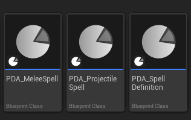
Simplifying the system down to 3 data assets, two of which inherit from PDA_SpellDefinition ended up being a lot easier to use for the others. Many of the optional properties of a spell are now turned on by setting a bool to true or changing the value of an enum.
Creation of the games save system
In UE5 saving data is achieved via the “Save Game to Slot” function.
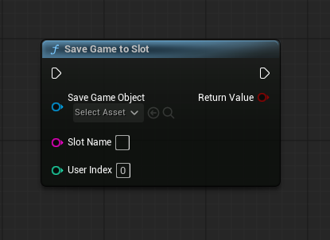
In order to avoid keeping track of the string of each piece of stored information, a custom save and load function was required as each class of save game object could store a unique string.
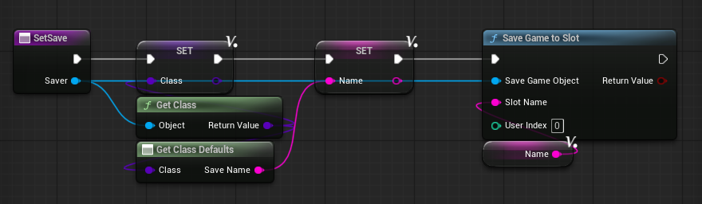
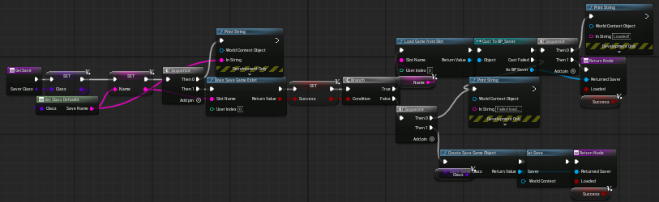
The load function is not as easy to understand as the save function, but in short you input the class of the save you wish to reach and it returns its corresponding save object. This was also intentionally made generic enough for other programmers to not just save things related to the equipment systems but also other kinds of data.
Creation of UI and its Widgets
Base class for buttons
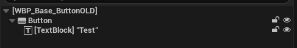
The base button consists of the button widget and its childed text widget as its essentials. As my research had warned me, these two widgets are hidden when the base button is placed in another widget blueprint:
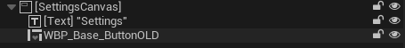
The process of creating buttons and revisiting them later as new functionality was added shows just how much of a time sink it can be to expose the variables of the base button’s widgets. Here is a quick demonstration:
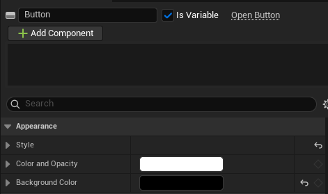
Here we can see the button’s color and opacity variable and it can easily be changed in the base buttons blueprint. But since the base button’s children are hidden when placed inside another blueprint we can not reach this menu, and we cannot change the color of each individual base button. To circumvent this we make a public variable called “color”. Now this color variable is not the same as what we want to reach but we can set the color we want to reach by code. This sets the color of the button to the same color as the public variable.
Another problem with button base class was also found during the process. To demonstrate this, let's say we have created a base class button without text and a child button that inherits from the base class. We then want two more buttons: one without text that calls an event when hovered over, another with text that calls an event when hovered over. In total we seek to create four different buttons. The inheritance of the first two is simple, the other two would require that they inherit from the first two, then implement the exact same hover functionality twice. This might not sound like a lot but if every optional functionality must be applied to more than one button, it can quickly add up and become a lot of gruntwork, if one wants to tweak functionality, it would have to be manually done to every button where it is implemented. This could have been fixed if one could attach widget components with the desired functionality to the buttons, but Unreal does not support user-made widget components (though Actor and Scene objects can have custom components).
This informed the choice of packing the base button with as much functionality as necessary, its tradeoff being its cluttered variables.
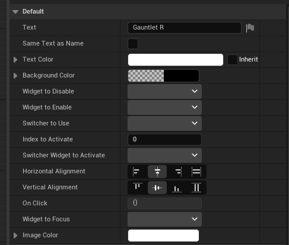
If a variable is left empty, then the code ignores the variable's corresponding functionality.
Problems when refactoring widgets
Just as research had warned, widgets are very strict with their structure and this was definitely felt when refactoring. As production for the button background images in the game was scheduled for later, background image functionality was not supported in buttons yet, and when it came to implementing the image it required restructuring the base button class as its button widget could only contain one child. It also required a lot of experimentation as it is not very obvious what widget could solve this issue as the “border” widget that has a background image variable always stretches the image to fit the border’s size, which was undesired.
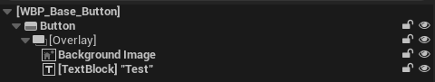
The overlay widget ended up being the solution to the problem as it gets around the one child limit of the button and can overlay as many of its children as possible.
Equipment selection UI and Equipment System Design Philosophy
We decided as a team to simplify AC6’s game design for customization, by reducing the type of different things you could equip to five (down from twelve). This was done to not only minimize the amount of content we would have to produce but also to our own spin on the system by introducing the Weight system. As we decided, the Weight system lets you, whenever you choose a spell, also choose that spells “weight”, that weight is represented visually on your character corresponding to where it is equipped and grants that spell bonus effects like improved damage or increased projectile amount, but comes with the cost making your character move slower. Although this is a departure from how AC6 works, it still maintains the principle of the players choices coming with a cost and it's a way of making it feel as though our limited amount of spells we can create as an indie time feel like there are a lot more of them, as Weight can alter a lot of things.
In order to store spells that should be in rotation for the player to use, another Data Asset was created. A BPFL could have also achieved this, but in this case an asset that could be assigned as a variable was more convenient as it would not require hard coding of where to find these spells.
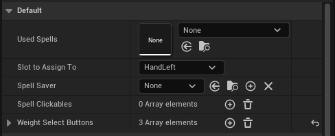
This solution allows us to insert any SpellsInRotation Data Asset in the used spells variable, which then generates clickable buttons for each spell that we have decided the player can use. This is very easy for other developers in the project to use as they can remove or add spells to the data asset without touching anything else.
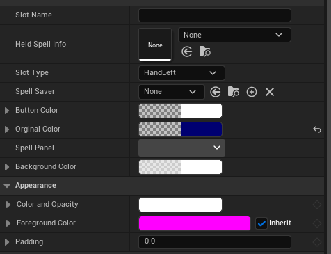
As seen here in the SpellClickable button’s variables, we can assign what spell saver for the button to use. The spell saver is a class that inherits from our custom Save Object, and makes saving what the player clicks on much simpler.
The BP_SpellSaver class:
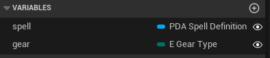
5. The Result
The following recording demonstrates the result of the equipment system developed for Hexmachia.
6. Reflection
I am proud of many of the solutions I found while developing this system in a game engine I am not very versed in, but that has led me to learn a few good lessons and help me see how a few things could have been done more effectively. I feel that I could have worked around UE5’s widgets better, and come up with a better solution then cramming all too much functionality into the button base class. It was definitely the fastest solution, and for an 8 week project, that matters a lot, but if I were to work on this further, I would break the button down into smaller widget blueprint pieces that can find and access each other's code.
If this project were to be made in a context where I had other areas of the game I worked on, I would like to work more directly on the spell effects to refactor the spell creation system into using a more dynamic and inheritance-based actor class, where actor components define what the spell does.
This is more of a wish list item, but having a video preview of the spell (like in Armored Core) would clarify what each spell does and would better inform the player’s choices.